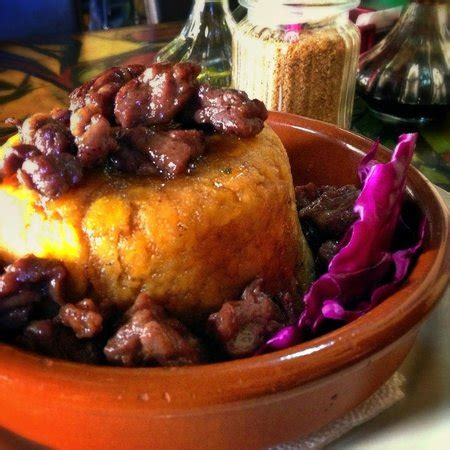

Mofongo Puerto Rico Style

A staple of Puerto Rican cuisine.
To make this properly, you will need a 'pilon',
a wooden mortar and pestle that you will use
to both mash and mix the ingredients together.
Ingredients:
- 1 good size green plantain
- 2 garlic cloves, peeled
- 1/2 cup fried pork skins (chicharrones)
- 1/2 cup cubed pork loin
- 2 cups beef broth
- salt and pepper to taste
- olive oil
Let's cook! --
-
Gather ingredients.
-
Peel plaintain and cut into 1" peices.
-
In a pan or deep fryer, fry cut plantains till
golden brown. Drain and set aside to cool.
-
Deep fry the cubed pork till done. Drain and
allow to cool.
-
Bring the beef broth to a simmer, season to
taste. Hold on low heat once ready.
-
In the pilon - add garlic, about a tablespoon
of olive oil, and a good pinch of salt.
Crush and mix until it forms a rough paste.
-
Add fried plantains and fried pork skin. Crush
and mix till plantains are mostly mashed. Add
olive oil as needed if mix looks too dry.
Add salt and pepper to taste.
-
Take the mixture out of the pilon and shape
into a ball, place it in a large bowl. Then
take the fried pork chuncks and place them
around the mofongo.
-
Pour the beef broth into the bowl around the
mofongo. Serve and enjoy!